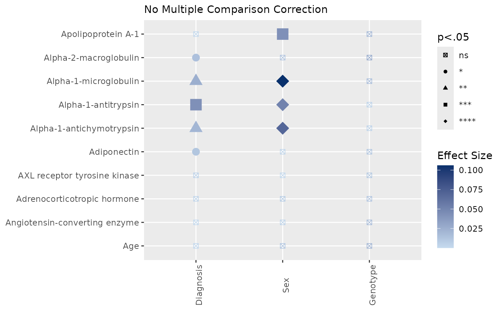

Plot ANOVA Relationships Matrix
Source:R/PlotAnovaRelationshipsMatrix.R
PlotAnovaRelationshipsMatrix.RdThis function plots the relationship between continuous and categorical variables using ANOVA or Kruskal-Wallis tests. It generates a "heatmap" with points colored and shaped based on statistical significance and effect size.
Usage
PlotAnovaRelationshipsMatrix(
data,
CatVars,
ContVars,
covariates = NULL,
Relabel = TRUE,
Parametric = TRUE,
Ordinal = FALSE,
min_n = 4,
eps = 1e-08,
Data = lifecycle::deprecated(),
fdr_scope = c("matrix", "per_outcome"),
Covariates = lifecycle::deprecated()
)Arguments
- data
The data frame containing the variables of interest.
- CatVars
Character vector of categorical variable names.
- ContVars
Character vector of continuous variable names.
- covariates
Optional character vector of covariate names for ANCOVA analysis.
- Relabel
Logical indicating whether to relabel variables with their labels (default is TRUE).
- Parametric
Logical indicating whether to use parametric (ANOVA) or non-parametric (Kruskal-Wallis) tests (default is TRUE).
- Ordinal
Logical, indicating whether ordinal variables should be considered.
- min_n
Minimum number of complete observations required for a tested relationship.
- eps
Small positive value used to avoid zero-size plotting artifacts.
- Data
Deprecated (since 19.15.0). Use
datainstead.- fdr_scope
Either
"matrix"(default) or"per_outcome", passed toApplyFDRCorrection()."matrix"corrects across all p-values at once (historical behavior)."per_outcome"corrects separately within each outcome: outcomes are the continuous variables (ContVars).- Covariates
Deprecated (since 19.15.0). Use
covariatesinstead.
Value
A list containing three ggplot objects: p (scatter plot without multiple comparison correction), p_FDR (scatter plot with FDR correction), and pvaltable (data frame of p-values and significance).
Examples
data(SampleData)
data(SampleVariableTypes)
# Attach labels and factor levels for readable axes
Labelled <- RevalueData(SampleData, SampleVariableTypes)$RevaluedData
result <- PlotAnovaRelationshipsMatrix(
Labelled,
CatVars = c("Diagnosis", "sex", "Genotype"),
ContVars = c("age", "ACE_CD143_Angiotensin_Converti",
"ACTH_Adrenocorticotropic_Hormon", "AXL", "Adiponectin",
"Alpha_1_Antichymotrypsin", "Alpha_1_Antitrypsin",
"Alpha_1_Microglobulin", "Alpha_2_Macroglobulin",
"Apolipoprotein_A1")
)
result$Unadjusted$plot
#> Warning: Using size for a discrete variable is not advised.
